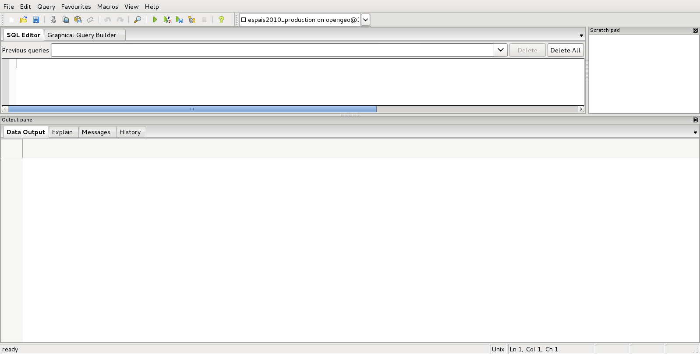

PostgreSQL
Objetivos
- ¿Qué es PostgreSQL?
- Características principales
- Instalación
- Clientes
- Psql
- PgAdmin III
¿Qué es PostgreSQL?
- PostgreSQL es un sistema de gestión de bases de datos objeto-relacional
- Distribuido bajo licencia BSD y con su código fuente disponible libremente.
- Es el sistema de gestión de bases de datos de código abierto más potente del mercado y en sus últimas versiones no tiene nada que envidiarle a otras bases de datos comerciales.
¿Qué es PostgreSQL?
Utiliza un modelo cliente/servidor
¿Qué es PostgreSQL?
- Aplicación cliente: Esta es la aplicación cliente que utiliza PostgreSQL como administrador de bases de datos. La conexión puede ocurrir via TCP/IP ó sockets locales.
- Ficheros de configuración: Los 3 ficheros principales de configuración utilizados por PostgreSQL, postgresql.conf, pg_hba.conf y pg_ident.conf
- Disco: Disco físico donde se almacenan los datos y toda la información necesaria para que PostgreSQL funcione
Instalación
instalación
- Desde repositorios
- Compilando código fuente
- Instalación en Windows
Desde repositorios Debian
$ sudo apt-get install postgresql
Estructura de la instalación
- /usr/lib/postgresql/9.1 → ejecutables y librerías
- /usr/share/postgresql/9.1 → archivos sql para creación estructura
- /usr/share/postgresql-common → herramientas comunes para administración
- /var/lib/postgresql/9.1
- /etc/postgresql/9.1/main
manejo del servicio
$ sudo service postgresql [start | stop | restart]
/etc/postgresql/9.1/main
En esta localización se encuentran los archivos necesarios para la configuración:
-
pg_hba.conf
- postgresql.conf
pg_hba.conf es el archivo de configuración de la autentificación de PostgreSQL
postgresql.conf es el archivo de configuración de PostgreSQL
Configuración accesos
Lo primero es configurar el servidor para que acepte conexiones de red.
Para ello modificaremos el archivo pg_hba.conf
[Tipo de conexion][database][usuario][IP][Netmask][Tipo de autentificacion][opciones]
local all postgres md5
CONFIGURACIÓN ACCESOS
Una vez definida la regla de acceso a nuestro servidor, le indicaremos las interfaces en las que puede escuchar el servidor. Para ello modificaremos el parámetro `listen_address` en el archivo `postgresql.conf` de la siguiente manera:
listen_address = '*'
En los parámetros de seguridad, activaremos la encriptación de las claves de usuario modificando en el mismo archivo:
password_encryption = on
clientes
psql
psql - PostgreSQL interactive terminal, es un cliente tipo terminal para la gestión de PostgreSQL
Preparar acceso
Disponemos de usuario
postgres
creado por la instalación en el sistema
La instalación crea en el servidor la base de datos
postgres
y el usuario superadministrador
postgres
preparar acceso
Asignamos una clave al usuario postgres del sistema
$ su passwd postgres
Accedemos mediante psql al servidor y modificamos password de postgres
$ su postgres
$ psql
=# alter user postgres with password '<una_password>';
Opciones
-
psql -d nombre_base_de_datos accederá a la base de datos que le indiquemos
-
psql -f ruta_a_archivo utiliza las sentencias que se encuentren dentro del archivo
-
psql -h nombre_servidor se conecta al servidor que le indiquemos
-
psql -p puerto se conecta a la instancia de |PG| a través del puerto indicado
-
psql -l muestra un listado de las bases de datos de la instancia
-
psql -U nombre_usuario se conecta usando el usuario indicado
-
psql -V muestra la versión de psql
Opciones
$ psql --help
algunas funciones
-
select version(); nos indicará la versión del servidor que tenemos instalada
-
\l muestra un listado de las bases de datos
-
select * from pg_user; nos muestra todos los usuarios del sistema
-
select * from pg_tables; muestra todas las tablas incluidas las del sistema
-
\c database cambia de base de datos
-
\dn muestra todos los esquemas de la base de datos
ALGUNAS funciones
-
\dt muestra las tablas, acepta expresiones para filtrar por ejemplo, \dt p* todas las tablas que empiezan por p
-
\du listado de usuarios/grupos y roles
-
\d tabla columnas, y tipos de datos de la tabla
-
\i ruta_archivo ejecuta las sentencias de un archivo
-
\o ruta_archivo devuelve los datos a un archivo
-
\conninfo muestra la información de la conexión
-
\encoding codificación fija la codificación del sistema, o sin parámetro la muestra
-
\q sale de la consola ``psql``
algunas funciones
\?
PgAdmin III
pgadmin3
pgAdmin es el más popular software para la administración de PostgreSQL a través de entorno gráfico. Se puede utilizar para el manejo de las versiones de 7.3 en adelante. Soporta todas las funcionalidades de PostgreSQL y permite una administración más sencilla de este. Incluye un editor de SQL desde el que se pueden realizar las consultas.
instalacion
$ sudo apt-get install pgadmin3
arranque

añadir conexión


SQL Editor
